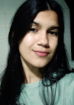

<!DOCTYPE html>
<html lang="en">
<head>
    <meta charset="UTF-8">
    <meta name="viewport" content="width=device-width, initial-scale=1.0">
    <title>Currículo</title>
</head>
<body>
    
</body>
</html>
<h1>Meu Perfil</h1>
<h2>Quem Sou Eu?</h2>

<li><strong>Olá!</strong> Eu me chamo <em>Isabela Sampaio</em>, e atualmente sou uma estudante do ensino médio regular e de concomitância externa na ETEJK e faço o curso de informática(atualmente no 2 semestre). Sou nova no setor de info, comecei a ter interesse ano passado e comecei com lógica de programação em Python, mas atualmente estou estudando o famoso HTML, e pretendo aprofundar na área de Front-End. (Python ainda está no meu coração😥)</li>
<p><strong>OBS: HOJE É DIA 05/08/23 ESPERO DAQUI HÁ UM TEMPO REVER ESSE DESAFIO E TÁ EM UM NÍVEL MELHOR</strong></</p>
<h2>Quer Falar Comigo?</h2>
<p>Vai ficar querendo...</p>
<ul>
    <li><a href="https://github.com/gustavoguanabara/html-css/blob/0115692e04eecabda77fb94814d15ccae59f59c9/desafios/modulo-01/d005/desafio-social.pdf" target="_blank" rel="externa">Desafio005</a></li>
</ul>
</p>